Getting Started with Embedded Audio: I2S and TDM in Practice
Before we begin
If you are interested in embedded audio, have a look at Digital Signal Processing: A Practical Guide for Engineers and Scientists. I think this book covers pretty much the theoretical foundations of the field, although fully understanding it takes a lot of background knowledge.
But in this post, I will keep things as easy to understand as possible, without jumping straight into technical jargon. I want embedded engineers who are just starting out and university students to be able to follow along—even engineers who work purely on software should get something out of it.
This post tries to answer one question: what is at the heart of a modern digital audio system? (A bit like explaining what steel is to a steelworker.)
A really visual introduction to the terminology
Let me start with these terms: sample rate, bit depth, and channels. You can use these three terms to define any sound in the computer world.
Sample rate
First, download Audacity. It is a simple, open-source audio editor.
Use it to open test.wav from this post’s attachments, or an .mp3 file of your own, and so on.
Click the magnifying glass to zoom in. Once you zoom in far enough, you can see individual dots.
This is how computers store audio: one sample point after another.
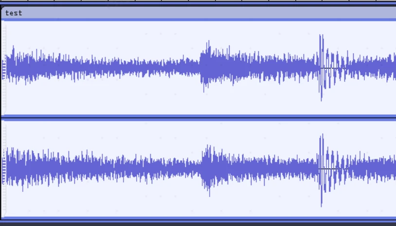
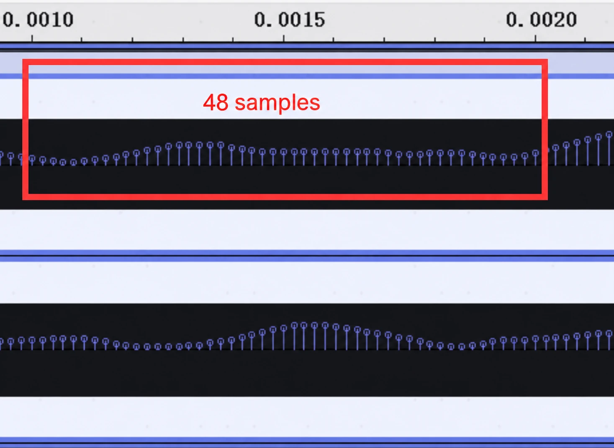
If you count carefully, you will find that one millisecond of audio in our test.wav file—the part inside the red box—is actually made up of 48 dots. In other words, one second of audio is made up of 48,000 dots. In technical terms, we say that this audio has a sample rate of 48,000 (48K).
Common sample rates include 48K, 44K, 16K, and 8K. Sample rate is to your ears what the pixels on a TV are to your eyes. In theory, the higher the sample rate, the closer the audio is to how that sound actually exists in the physical world. Try it for yourself: below 44K, the sound becomes noticeably “blurry.”
Channels
Our test.wav has two channels. In fact, these two channels will be sent to our left and right ears—what we call the left and right audio channels.
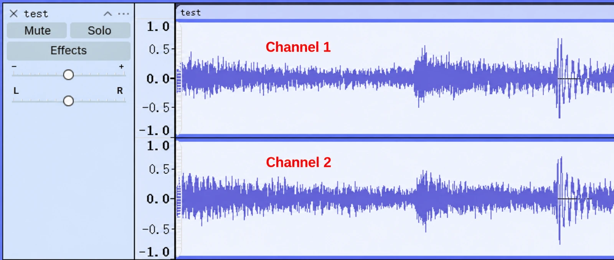
Bit depth
In the previous section, we talked about sample points. The amount of space needed to store one sample point is called bit depth. If we check test.wav, its size is 768,170 bytes. The audio is about 4 seconds long, has 2 channels, and has a sample rate of 48,000. Let’s do the math:
768170 / 4 / 2 / 48000 = 2That means each sample point uses 2 bytes. One byte is 8 bits, so one sample point in this audio takes up 16 bits—what we usually call 16bit. Common bit depths include 16bit, 24bit, and 32bit.
(Just in case anyone really is unfamiliar with bits, let me go into a little more detail. Think of something from everyday life: when we talk about a monthly mobile data allowance of 1G, 1G = 1024 megabytes = 1024 × 1024 × 1024 bytes = 1024 × 1024 × 1024 × 8 bits. It is a bit like the relationship between tens of thousands, thousands, and hundreds when counting money.)
PCM (Pulse Code Modulation)
PCM is simply those individual sample points in the pictures above. It is the form audio takes in the computer world. Engineers usually say things like:
- “What format should I use to open your
.pcmfile?” // Asking what sample rate, channel count, and bit depth to use when opening the file. - “I’ve sent you the
.pcmfile decoded from the MP3.” // Audio in any format has to be decoded into PCM before it can be played. - “Can you capture the PCM stream down in the lower layers of Android for me?” // By the time music from an app on your phone reaches the lower layers of Android, Android’s built-in decoding library has already decoded it into PCM. When engineers working on those lower layers investigate a problem, they generally ask for the PCM audio data passing through that part of the system.
WAV
We have mentioned test.wav several times. So what is the relationship between WAV and PCM?
We said earlier that PCM is just a sequence of sample points. But to listen to that PCM, we still need to know what sample rate, channel count, and bit depth to use when opening those points.
Let’s try an experiment. Import test.wav into Audacity as 16K, 2ch, 16bit, and see what it sounds like.
Here are the steps: Audacity → File → Import → Raw Data → select test.wav → choose the format shown below.
Have a listen. The audio is now 12 seconds long, and the sound is much deeper. This tells us that we have not opened test.wav at the correct sample rate.
Let’s try opening it again, this time as 48K, 2ch, 16bit.

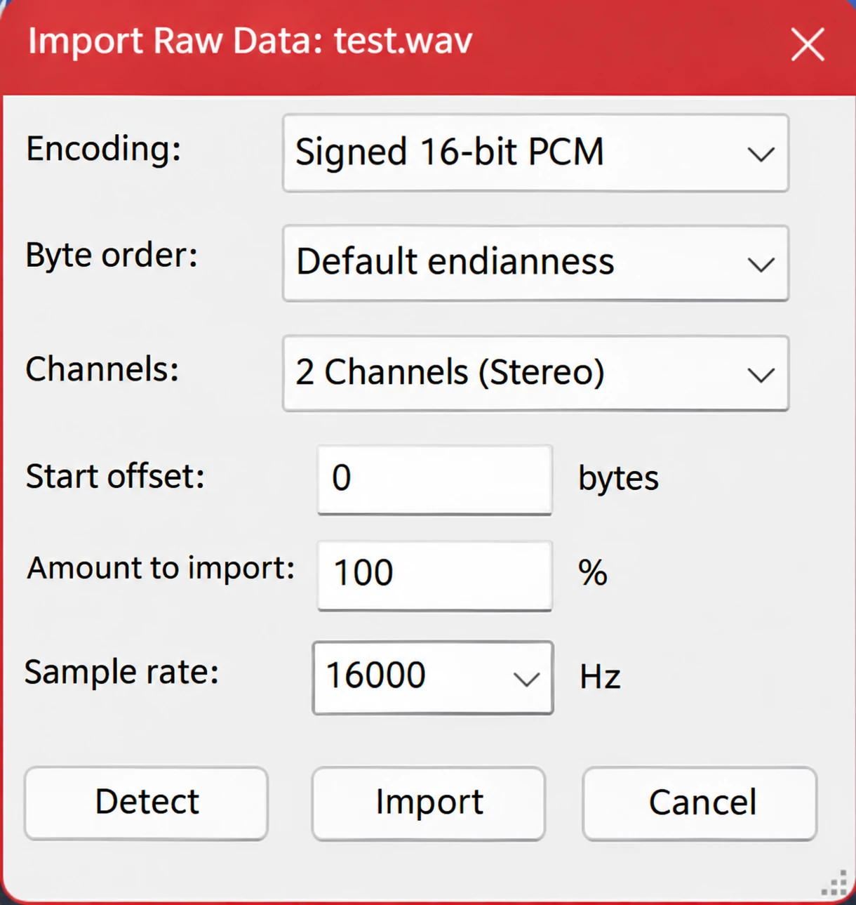

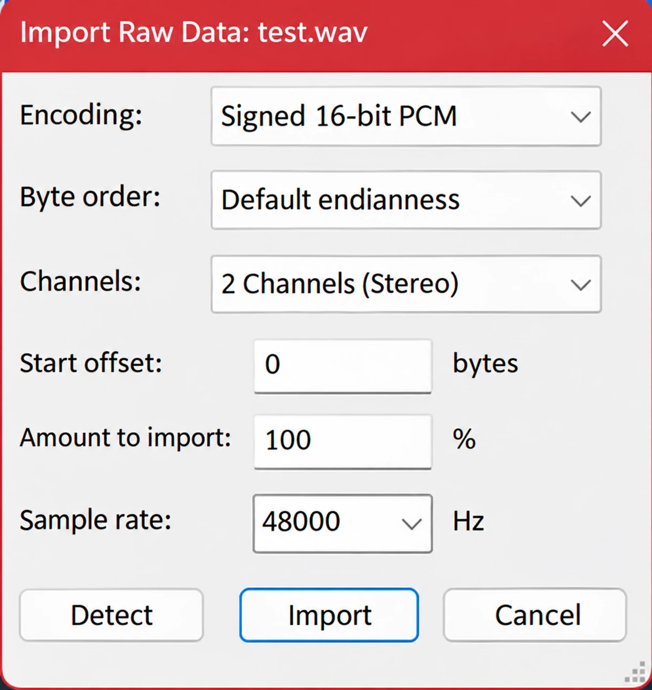
Now it sounds normal—exactly the same as when we use Audacity → File → Open → test.wav.
Why does it sound normal when we use “File → Open”? How does Audacity know that it should open this audio file as 48K, 2ch, 16bit?
The reason is that we have stored these three pieces of information—sample rate, channel count, and bit depth—at the beginning of test.wav. When Audacity opens it, it automatically reads that information and opens the file in the correct format.
WAV = format header (sample rate, channels, bit depth) + PCMHave a play with it: import test.wav into Audacity at different sample rates, with different channel counts and bit depths, and listen. See if you can spot any patterns!
MP3
MP3 is really just a compressed version of WAV. You can see that test.mp3 in the attachments is much smaller than test.wav.
Try Audacity → File → Import → Raw Data → select test.mp3.
You will hear nothing but noise.
But if you use Audacity → File → Open → test.mp3, it sounds just like test.wav.
It is like the text-file example in the attachments: you can double-click test.txt and read the text straight away, but with test.zip, you need to unzip it before you can open test.txt and read what is inside.
Audacity → File → Open → test.mp3 automatically does something similar to unzipping. We call this operation of turning .mp3 into .pcm decoding.
Channels and slots
A stereo MP3 has two channels: left and right. After decoding, it becomes two-channel PCM that is passed down to the lower layers of Android.
Similarly, 5.1-channel Dolby audio decodes into a six-channel PCM file.
(Dolby 5.1 = front left, front right, center, surround left, surround right + the low-frequency effects channel.)
Slots
You will generally find the word slot in chip manuals. It is less common outside the industry.
You can also think of a slot as a channel. For example, we might say:
“This SoC sends two channels of audio to the amplifier chip. The first channel goes in slot 0, and the second goes in slot 1.”
Next, we will introduce digital audio interfaces, which will make this idea of a slot clearer.
Digital audio interfaces (DAI)
The digital audio interface we are talking about in this article sits at the position shown below (adapted from Figure 3-7 in Digital Signal Processing: A Practical Guide for Engineers and Scientists).
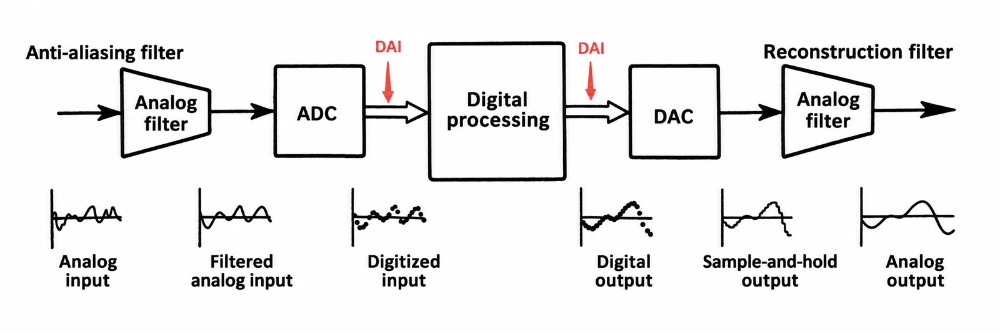
In a modern digital audio product, the chip at the “digital processing” position in the picture might be a SoC or a DSP.
(A SoC—System on Chip—is, simply put, the CPU in your phone. On a circuit board, it is a little square.
A DSP—Digital Signal Processor—is a dedicated computing unit specifically for processing audio. On a circuit board, it is also a little square.
DSP can stand for either Digital Signal Processor or Digital Signal Processing. The first is a chip; the second is a university course. Don’t mix them up!)
At the DAC position, you will generally find a power amplifier chip. The amplifier chip converts digital audio into an analog signal to drive the speaker.
Put simply, a digital audio interface is just a few copper wires—three or four—between the SoC (or DSP) and the amplifier chip (or DAC). I2S and TDM are commonly used today.
So how should we understand the word “digital” in “digital audio interface”? Simply put, if you measure it with an oscilloscope, it looks like the picture below. It carries 0s and 1s, rather than an analog signal.
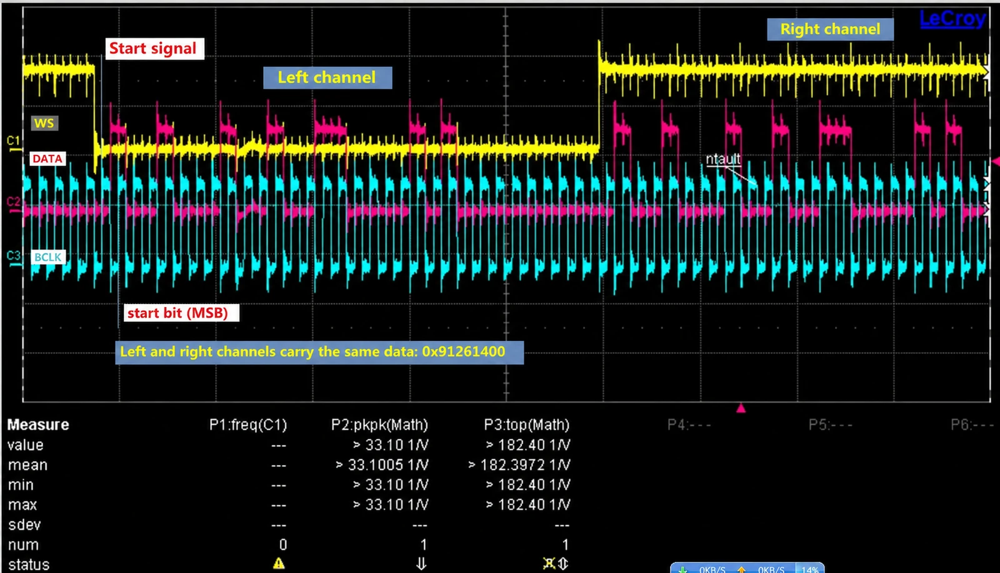
Since it is a digital signal, we can capture the data on the digital audio interface with a logic analyzer and analyze it. In the next two sections, I will show you I2S and TDM data I captured at work and explain how to turn it into audio that we can play on a computer.
(A logic analyzer is like an oscilloscope that, after capturing the waveform, also turns it into 0s and 1s for you. For example, 0 V becomes 0, and 1.8 V becomes 1.)
I2S
First, download this software so that you can open the logic analyzer data I captured:
Downloads — DreamSourceLab (logic analyzers / oscilloscopes)
An I2S interface consists of four wires. I2S has a master and a slave: whichever side is the I2S master is responsible for sending the clocks. In the picture below, the SoC is the I2S master, sending the SCK and WS signals.
SD out is the PCM data the SoC sends to the AMP; SD in is the PCM data the AMP sends to the SoC. Generally speaking, though, the AMP does not send PCM data back to the SoC. What the picture is showing is that I2S supports sending and receiving at the same time.
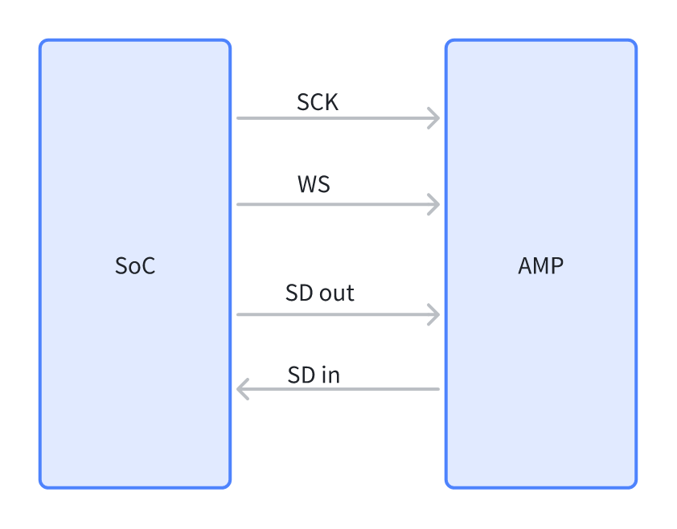
Now we come to the main part of this post. Double-click I2S/raw.dsl in the attachments and select I2S as the protocol decoder. The protocol settings are shown below. This is the I2S format I selected while debugging the chip. (When debugging I2S, the SoC and AMP must have the same I2S configuration.)
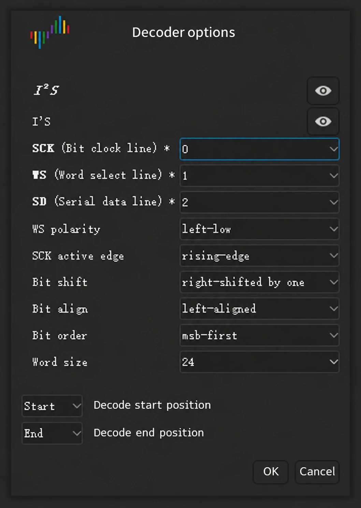
Click OK, then wait about five minutes for decoding progress to reach 100%.
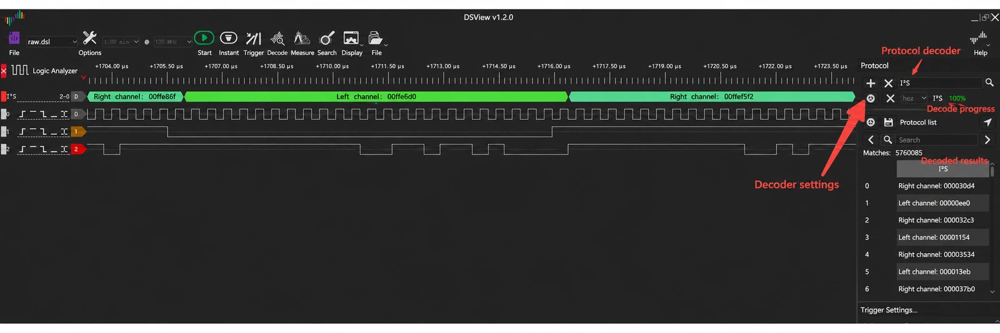
Let’s zoom in and look at a typical I2S timing diagram.
When WS is low, the left channel is being transmitted; when it is high, the right channel is being transmitted. I2S can only transmit two channels. The left channel goes in slot 0, and the right channel goes in slot 1.
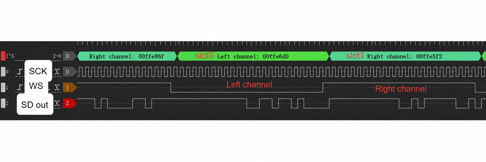
The frequency of WS is the sample rate of the PCM data being transmitted. In modern digital audio systems, this is generally 48K.
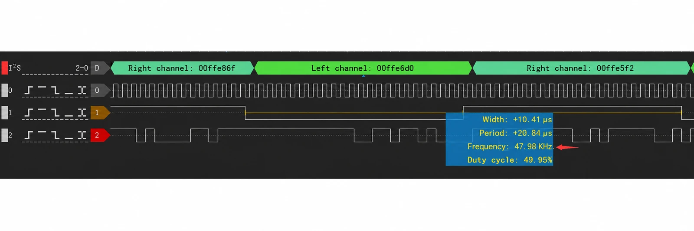
The frequency of SCK is about 2.33 MHz. Where does that 2.33 MHz come from?
It is actually:
48000 × 24 (bits) × 2 (channels) = 2330000Here, 48000 is the frequency of WS—in other words, the sample rate of the PCM data being transmitted.
24bit means that each slot takes up 24 rising edges—in other words, the bit depth of the PCM data being transmitted.
The 2 channels are the left and right audio channels.
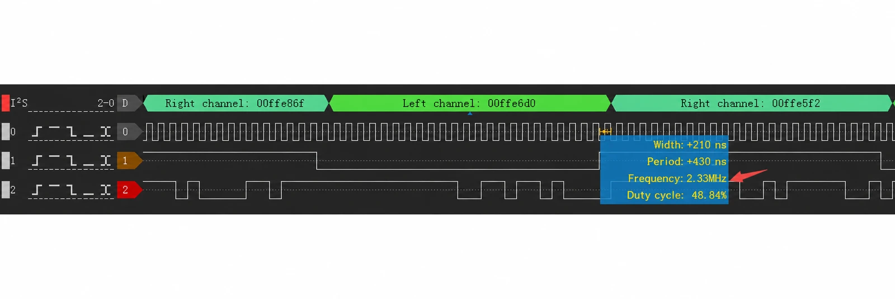
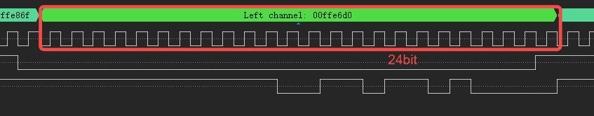
Next, let’s save the data captured by the logic analyzer (I2S/txt2pcm/in.txt) and turn it into audio.

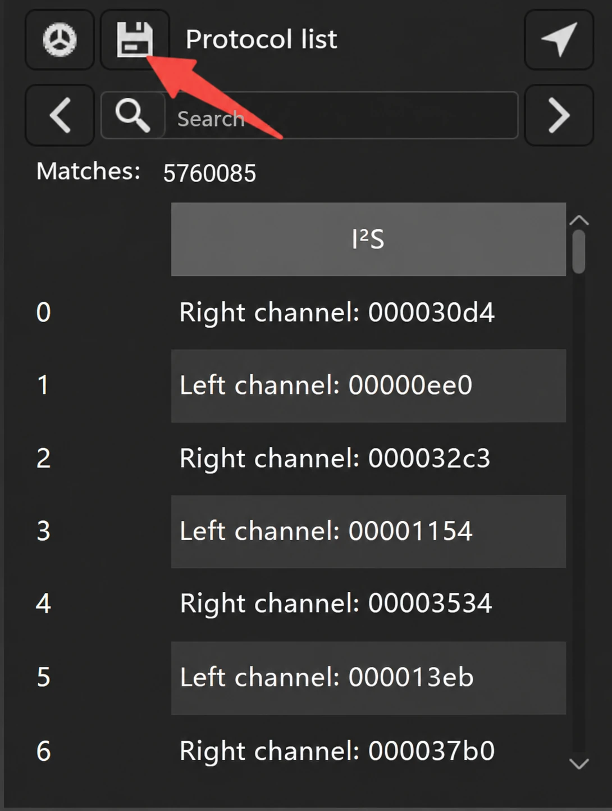

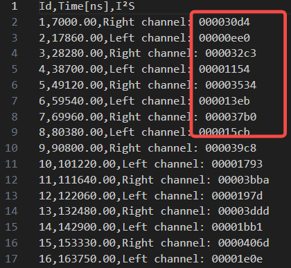
All we need to do is read these values and write them into a PCM file. Run the example below from I2S/txt2pcm/, where in.txt is located.
Here is a simple example for you. (I wrote it pretty casually—please bear with me!)
#include <sys/types.h>
#include <sys/stat.h>
#include <fcntl.h>
#include <errno.h>
#include <string.h>
#include <stdio.h>
#include <unistd.h>
#include <iostream>
#include <fstream>
#include <string>
#include <string.h>
#include <sstream>
using namespace std;
#define HEAD "Left channel: "
int main() {
string line;
ifstream inFile("in.txt");
const char *p = NULL;
stringstream ss;
unsigned int data;
string buffer;
unsigned int error = 0;
truncate("output.pcm", 0);
int pcm_fd = open("output.pcm", O_WRONLY | O_CREAT, 0666);
if ( inFile.is_open() && pcm_fd > 0 ) {
while (getline(inFile, line)) {
if ( p = strstr(line.c_str(), HEAD) ) {
sscanf(p + strlen(HEAD), "%08x", &data);
printf("%08x\n", data);
write(pcm_fd, (void*)&data, 3); //3bytes 24bit
}
}
close(pcm_fd);
inFile.close();
}
else {
cout << "Unable to open file" << endl;
}
return 0;
}Import the resulting I2S/txt2pcm/output.pcm into Audacity, and you get one minute of audio.
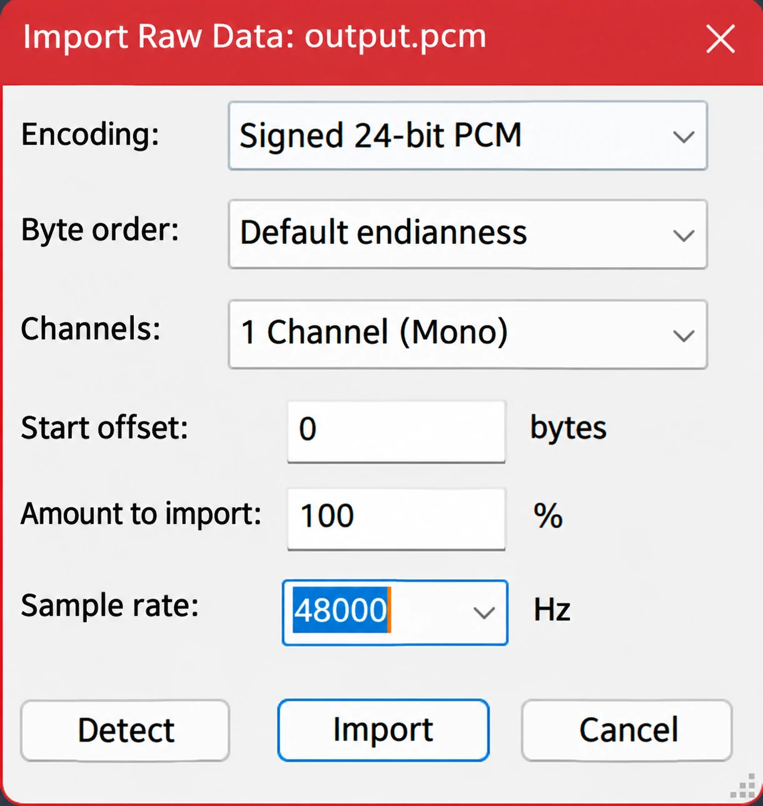
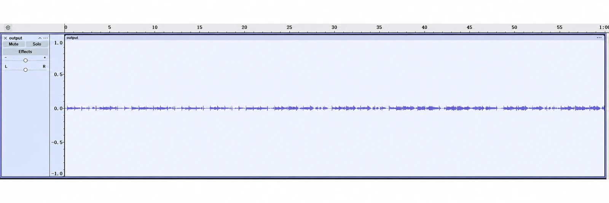
TDM
TDM is more flexible than I2S and can transmit multiple channels. Common options include TDM8 (8 channels) and TDM16 (16 channels).
Strictly speaking, I2S is actually a subset of TDM. I2S is TDM2.
Let’s look at a common way of wiring up TDM.
The picture below is a common TDM16 block diagram. This means TDM16 supports 32 downstream channels and 32 upstream channels at the same time. There is so much more you can do with it than with I2S!
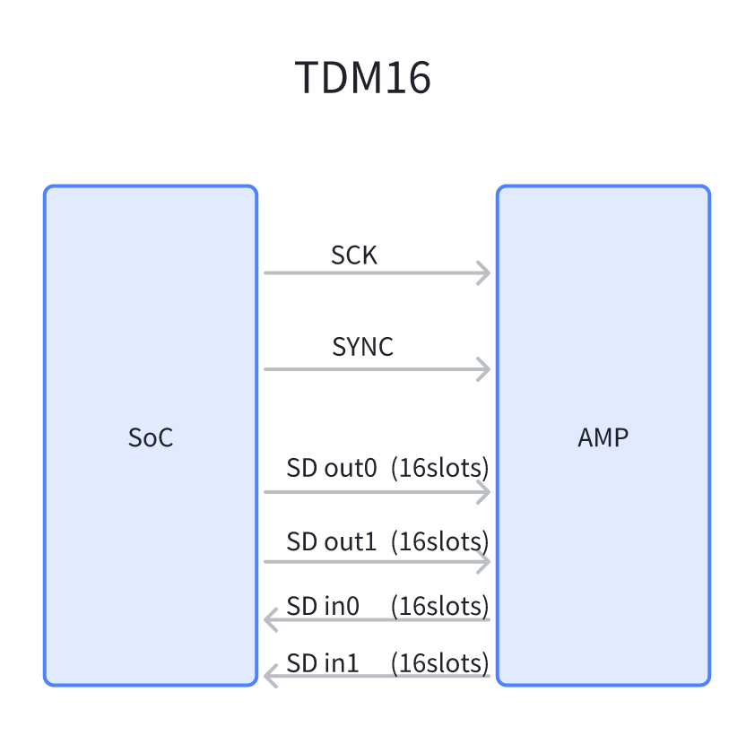
Now let’s look at a timing diagram I captured in my own project.
You can see that the frequency of SYNC is still 48K—the sample rate of the PCM being transmitted.
There are 16 slots in total. When I captured this data, only slot 0 and slot 1 had data in them.
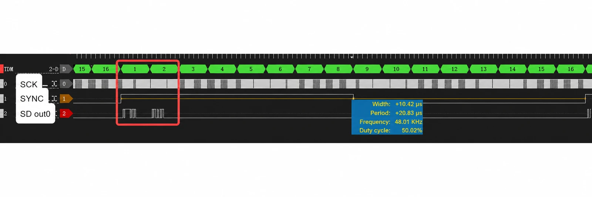
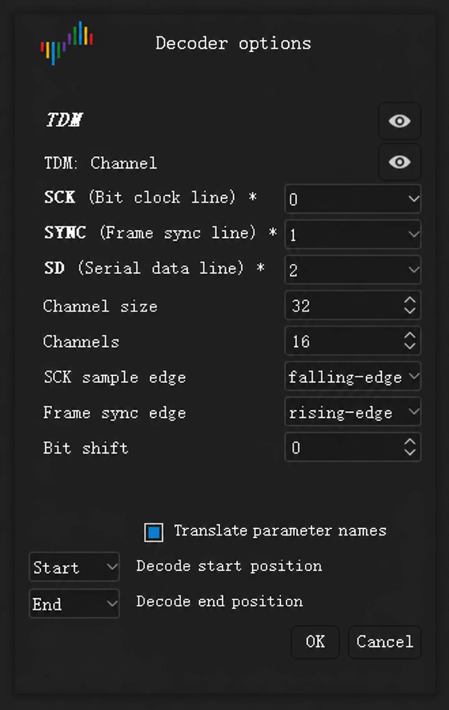
So what is the frequency of SCK now? Let’s work it out:
48000 × 16 (channels) × 32 (bits) = 24.6 MHz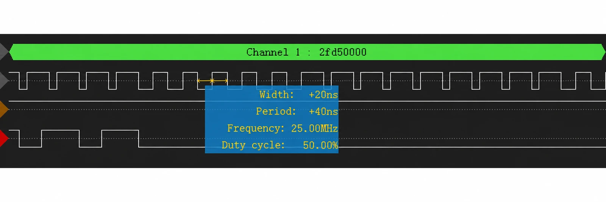
In the same way, import TDM/output.pcm into Audacity as 48K, 32bit, 1ch, and you can hear the music.
Wrapping up
In this post, I have tried to explain PCM and the embedded digital audio interfaces I2S and TDM in the most straightforward language possible. I hope it helps those of you who are just getting into digital audio.
The number of digital audio interfaces on a SoC platform, and the number of channels they support, basically determine what kinds of products that platform can support—for example, how many speakers it can handle. If you are interested, let me know in the comments. I will write another post about channel allocation strategies in digital audio products and the approaches commonly used at the forefront of the industry today.
All the audio used in this article is by Khalil Fong.
In memory of Khalil Fong.
Rest in Peace, Mr. Fong.
Attachments
Download the full lab (218 MiB): captures, decoded text exports, and audio files. Extract the .7z file with 7-Zip. All paths in this article are relative to the extracted i2s-tdm-lab/ folder.
Download the small lab kit: audio examples, reconstructed PCM files, and conversion tools. The original .dsl captures and in.txt exports are included in the full lab only.